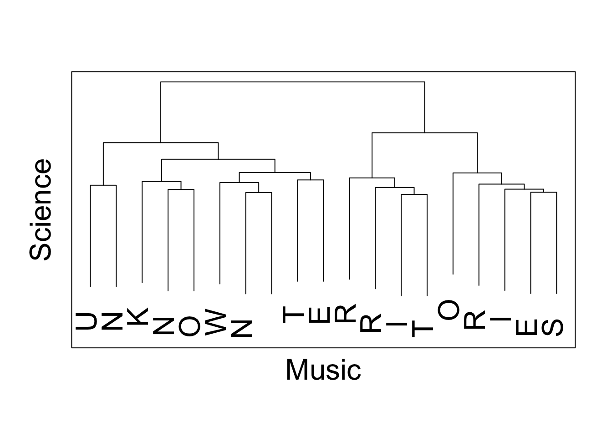

Media Arts and Entomology
Scientifically Speaking with Irene Moon

Since 1997, Scientifically Speaking with Irene Moon has been presenting The Lectography: musical lectures about insects and other arthropods in an attempt to elevate Entomology (the study of insects) as a rock genre. About 30 different lectures have been performed on over 500 occasions. This includes tours of Europe, Australia, and live radio broadcasts dealing with entomological topics on WFMU in New York and other radio stations.
Irene Moon (a.k.a Katja C. Seltmann, PhD) is the Director of the Cheadle Center for Biodiversity and Ecological Restoration at the University of California Santa Barbara, and a researcher for ten plus years in Entomology. She brings the aesthetics from the entomology laboratory in front of alternative audiences (principally art galleries and music venues), in the form of an absurd, however truly factual presentations about insects. Playing upon many of our deep fears and stereotypes about insects, she reconfigures them exposing the factual roots (and misinterpretation) of these myths. Performance and lecture are a means of connecting the public to entomology and increasing awareness of the art and creativity intrinsic to the scientific process. The present power point presentation is a New Wave lecture on cockroaches titled “You, the Charmer.” Other recent lectures include “The Social Hour,” an introduction to insect sociality and its comparison to human etiquette at social high society social functions, “Their Stinging Hairs,” a big band and torch song presentation about irritating hairs of certain moth larvae and “I’ll Be Seeing You, Dreadful creature,” a reenactment of blood-feeding moths in Asia that are often pests of zoo bovines.
Although arguably the Lectography is primarily artistic in nature, the presentations have a strong educational impact upon the unknowing students. The Moon audience generally consists of members in the art community, experimental radio listeners, and frequenters of the late night music clubs. This audience, generally mid-20s to 40, tends to be very surprised and receptive of the educational opportunity they are given. Elemental entomology is taught through humor and music, speaking in a colorful and vibrant visual language that holds the interest of this fast-minded generation of music videos and wireless Internet. Often the person walks away with a greater understanding of insect diversity and complexity, combating the common misconception that the only good bug is a dead one. Besides concrete appreciation for the individual organisms in the presentation, it is a primary focus to highlight the dedication and creativity of individual Entomologists whom are great contributors in the field.
Unknown Territories Radio
Unknown Territories radio is a weekly science and music broadcast on KCSB 91.9 in Santa Barbara. Every week my co-host Yon Visell (Re Touch Lab, UC Santa Barbara) and I talk about current events in science, interview faculty and other researchers about their work and play interesting music. Our regular time is Monday 9-10AM PT and you can listen online through Radio Free America. See our playlists at KCSB.org and follow us on Facebook for show updates.
